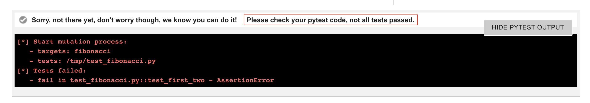
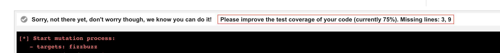
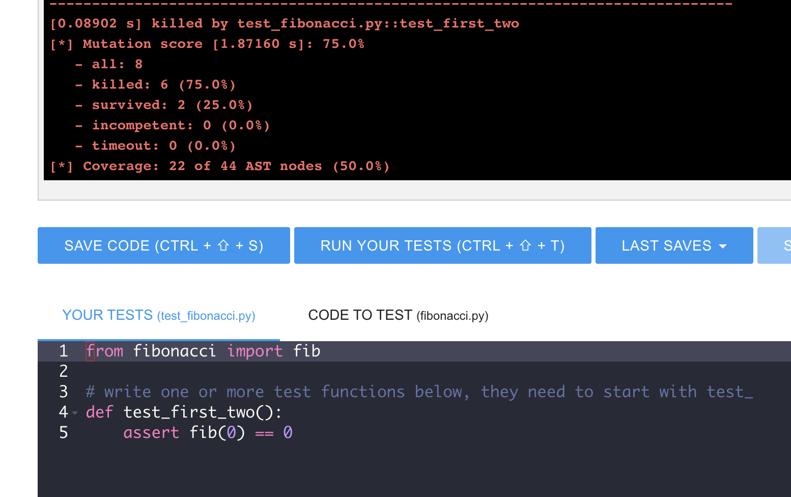
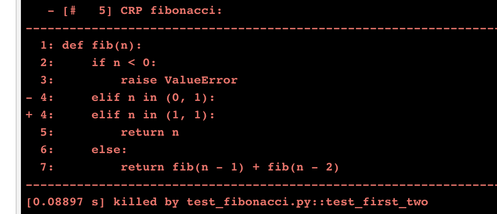
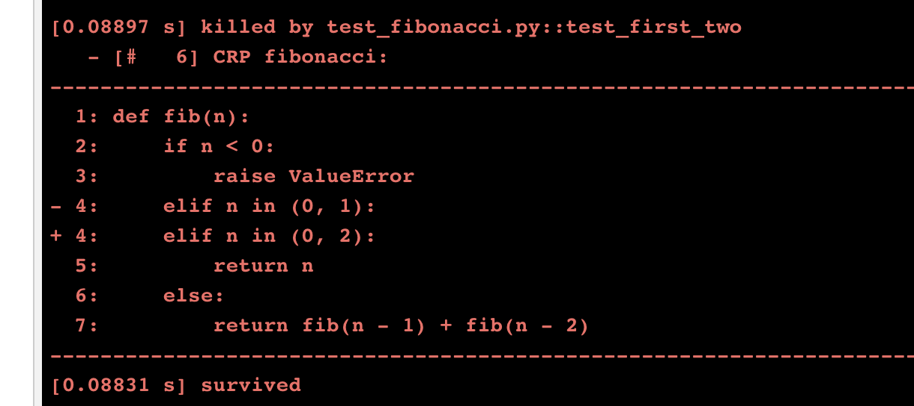

Writing test code is an essential skill. As PyBites we believe writing code is the only solution to becoming a master (Ninja) at programming. The same applies to test code. For that reason we extended our regular exercises with Test Bites.
In this article you will read about the feature showcasing it on our first ever Test Bite. We also share some details around implementation and a challenge we hit getting it to work. Enjoy and start honing your testing skills today!
It was one of the most requested features. Period.
It is also a logical progression. So far, coding our 200+ Bites of Py you have looked at test code and analyzed its output when Bites did not pass. This is of course very useful, but it does not teach you how to write tests for your code. Many users expressed how cool it would be if they could learn how to code in pytest on our platform. Well, now you can! We just added 3 Test Bites - stay tuned for more soon ...
This was a challenge, but somebody on Slack suggested mutation testing and a quick google search yielded MutPy:
MutPy is a mutation testing tool for Python 3.3+ source code. MutPy supports standard unittest module, generates YAML/HTML reports and has colorful output. It applies mutation on AST level. You could boost your mutation testing process with high order mutations (HOM) and code coverage analysis.
Here we run it manually on Bite 05:
$ mut.py -h
usage: mut.py [-h] [--version] [--target TARGET [TARGET ...]]
[--unit-test UNIT_TEST [UNIT_TEST ...]] [--runner RUNNER]
[--report REPORT_FILE] [--report-html DIR_NAME]
[--timeout-factor TIMEOUT_FACTOR] [--show-mutants] [--quiet]
[--debug] [--colored-output] [--disable-stdout]
[--experimental-operators] [--operator OPERATOR [OPERATOR ...]]
[--disable-operator OPERATOR [OPERATOR ...]] [--list-operators]
[--path DIR] [--percentage PERCENTAGE] [--coverage]
[--order ORDER] [--hom-strategy HOM_STRATEGY]
[--list-hom-strategies] [--mutation-number MUTATION_NUMBER]
$ mut.py --target names.py --unit-test test_names.py --runner pytest --coverage
[*] Start mutation process:
- targets: names.py
- tests: test_names.py
[*] 6 tests passed:
- test_names [0.37057 s]
[*] Start mutants generation and execution:
- [# 1] CRP names: [0.13190 s] killed by test_names.py::test_sort_by_surname_desc
- [# 2] CRP names: [0.09615 s] killed by test_names.py::test_sort_by_surname_desc
- [# 3] CRP names: [0.09483 s] killed by test_names.py::test_sort_by_surname_desc
- [# 4] CRP names: [0.09546 s] killed by test_names.py::test_sort_by_surname_desc
- [# 5] CRP names: [0.09294 s] killed by test_names.py::test_dedup_and_title_case_names
- [# 6] CRP names: [0.09068 s] killed by test_names.py::test_dedup_and_title_case_names
- [# 7] CRP names: [0.08975 s] killed by test_names.py::test_dedup_and_title_case_names
- [# 8] CRP names: [0.09013 s] killed by test_names.py::test_dedup_and_title_case_names
- [# 9] CRP names: [0.12359 s] killed by test_names.py::test_sort_by_surname_desc
- [# 10] CRP names: [0.09420 s] killed by test_names.py::test_sort_by_surname_desc
- [# 11] CRP names: [0.09482 s] killed by test_names.py::test_sort_by_surname_desc
- [# 12] CRP names: [0.09506 s] killed by test_names.py::test_sort_by_surname_desc
- [# 13] CRP names: [0.09875 s] killed by test_names.py::test_sort_by_surname_desc
- [# 14] CRP names: [0.09385 s] killed by test_names.py::test_sort_by_surname_desc
- [# 15] CRP names: [0.09451 s] killed by test_names.py::test_dedup_and_title_case_names
- [# 16] CRP names: [0.09528 s] killed by test_names.py::test_dedup_and_title_case_names
- [# 17] CRP names: [0.09253 s] killed by test_names.py::test_dedup_and_title_case_names
- [# 18] CRP names: [0.09329 s] killed by test_names.py::test_dedup_and_title_case_names
- [# 19] CRP names: [0.09638 s] killed by test_names.py::test_sort_by_surname_desc
- [# 20] CRP names: [0.09449 s] killed by test_names.py::test_sort_by_surname_desc
- [# 21] CRP names: [0.09480 s] killed by test_names.py::test_dedup_and_title_case_names
- [# 22] CRP names: [0.09092 s] killed by test_names.py::test_dedup_and_title_case_names
- [# 23] CRP names: [0.09388 s] killed by test_names.py::test_sort_by_surname_desc
- [# 24] CRP names: [0.09356 s] killed by test_names.py::test_sort_by_surname_desc
- [# 25] CRP names: [0.09271 s] killed by test_names.py::test_dedup_and_title_case_names
- [# 26] CRP names: [0.09341 s] killed by test_names.py::test_dedup_and_title_case_names
- [# 27] CRP names: [0.09397 s] killed by test_names.py::test_sort_by_surname_desc
- [# 28] CRP names: [0.10249 s] killed by test_names.py::test_shortest_first_name
[*] Mutation score [8.05135 s]: 100.0%
- all: 28
- killed: 28 (100.0%)
- survived: 0 (0.0%)
- incompetent: 0 (0.0%)
- timeout: 0 (0.0%)
[*] Coverage: 113 of 113 AST nodes (100.0%)
To see the mutations it tried, run it with the -m switch (update: we dropped the --coverage switch in favor of pytest-cov, more below ...):
$ mut.py --target names.py --unit-test test_names.py --runner pytest --coverage -m
[*] Start mutation process:
- targets: names.py
- tests: test_names.py
[*] 6 tests passed:
- test_names [0.32475 s]
[*] Start mutants generation and execution:
- [# 1] CRP names:
--------------------------------------------------------------------------------
- 1: NAMES = ['arnold schwarzenegger', 'alec baldwin', 'bob belderbos', \
+ 1: NAMES = ['mutpy', 'alec baldwin', 'bob belderbos', \
2: 'julian sequeira', 'sandra bullock', 'keanu reeves', \
3: 'julbob pybites', 'bob belderbos', 'julian sequeira', \
4: 'al pacino', 'brad pitt', 'matt damon', 'brad pitt']
5:
--------------------------------------------------------------------------------
[0.10319 s] killed by test_names.py::test_sort_by_surname_desc
- [# 2] CRP names:
--------------------------------------------------------------------------------
- 1: NAMES = ['arnold schwarzenegger', 'alec baldwin', 'bob belderbos', \
+ 1: NAMES = ['', 'alec baldwin', 'bob belderbos', \
2: 'julian sequeira', 'sandra bullock', 'keanu reeves', \
3: 'julbob pybites', 'bob belderbos', 'julian sequeira', \
4: 'al pacino', 'brad pitt', 'matt damon', 'brad pitt']
5:
--------------------------------------------------------------------------------
[0.09149 s] killed by test_names.py::test_sort_by_surname_desc
...
... many more ...
...
Pretty cool eh? There is also a good explanation and simple example on MutPy's project page.
As previously mentioned, a Test Bite looks like a regular Bite but instead of a given set of tests, you are provided with a code module that gets imported. You are asked to write one or more test functions:


Let's write some code for this Bite and see the different checks (warning: contains spoilers, if you want to try it out now, go write code here!)
It first checks if your test code runs. Here I forgot a colon after my function declaration:

If you click Show pytest output you can see where you went wrong:

Secondly it checks if the tests pass. Here I added a statement that does not pass:

And it doesn't like that:

Next step is code coverage. Our initial thought was to use pytest-cov but that would mean two commands to run on the code. If possible it's preferable to use one tool. Luckily MutPy had us covered (pun intended). As long as we run it with the --coverage flag (see above).
Update 21st of Nov 2019: MutPy's coverage was not that obvious and did not show the missing lines. So we DO use pytest-cov now making the output much better / didactic!

--
The code so far has a coverage of 50%:

At this point we also see MutPy's mutation test output that we included (using the -m switch). Again use Show pytest output to reveal the full output.
As you can see MutPy started the mutants generation and execution. Sounds like a game no? It tries to kill the mutants using your test code.

More in a bit. Scrolling down you see the coverage for which it uses Python's ast or Abstract Syntax Trees.

Deleting one of the lines we have written so far we see that not all mutants get killed. Scrolling down you see 2 survivors:

Here is a mutant our tests addressed:

And here are the two survivors we still need to address:


Adding assert fib(1) == 1 earlier kills those survivors.
Let's work on the 50% coverage percentage next. Here is another test function to test a higher number:

This brings the coverage up to 93%! There is still one scenario we did not write tests for, negative numbers:

I'll leave that as an exercise to the reader :)
Finally when you pass syntax + pytest run + 100% coverage + 100% mutation score you pass the Bite:

As we're still testing the waters of this feature / the MutPy module, minimum coverage and mutation required scores might go down a bit if the Test Bites become too challenging ...
As elaborated in PyBites Code Challenges behind the scenes we run our platform on Heroku and use AWS Lambda for code execution.
One tough nut to crack was AWS's lack of parallel processing, more specifically multiprocessing.Queue that MutPy uses (if you try it, you'll get OSError: [Errno 38] Function not implemented).
Luckily thanks to this article replacing multiprocessing.Queue with multiprocessing.Pipe in the MutPy module got it to work 🎉
Just leaving this note here if somebody runs into this.
We hope this will not only improve your pytest skills, but also how you think about writing test code.
We are putting all Test Bites into a new / dedicated learning path soon so stay tuned ...
As always have fun and let us know if you have any feedback on this new feature, preferably on Slack:
For platform questions use the #codechallenges channel.
To share your Pythonic wins (be it with this feature or any other thing you use Python for), hop into our #checkins-and-wins channel.
Special thanks to AJ, David, Martin and Harrison for testing out this feature!
Keep Calm and Code in Python!
-- Bob